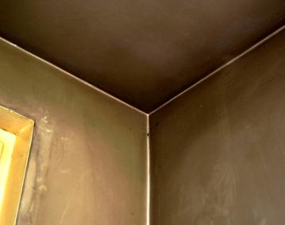
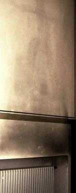

Weitere Datenübertragung Ihres Webseitenbesuchs an Google durch ein Opt-Out-Cookie stoppen - Klick!
Stop transferring your visit data to Google by a Opt-Out-Cookie - click!: Stop Google Analytics
Cookie Info. Datenschutzerklärung


 Altbau und Denkmalpflege Informationen - Startseite / Impressum
Altbau und Denkmalpflege Informationen - Startseite / Impressum
Inhaltsverzeichnis - Sitemap - über 1.500 Druckseiten unabhängige Bauinformationen
Die härtesten Bücher gegen den Klimabetrug - Kurz + deftig rezensiert +++
Bau- und Fachwerkbücher - Knapp + (teils) kritisch rezensiert
EnEV-Befreiung gem. § 25 (17 alt)! +++
Fragen? +++ Alles auf CD
Schimmelinfo bei Haushaltstipps Ratgeber-Portal
27.10.06: DER SPIEGEL: Energiepass: Zu Tode gedämmte Häuser
Kostengünstiges Instandsetzen von Burgen, Schlössern, Herrenhäusern, Villen - Ratgeber zu Kauf, Finanzierung, Planung (PDF eBook)
Altbauten kostengünstig sanieren -
Heiße Tipps gegen Sanierpfusch im bestimmt frechsten Baubuch aller Zeiten (PDF eBook + Druckversion)
Berliner Schimmelpilzkonferenz 21. März 2013 - u.a.m. Konrad Fischer: "EnEV und
Schimmelpilz - die Wahrheit der Bauphysik"

Schimmelpilzbefall durch und trotz Dämmung
Wie Sie schwarze Wohnungen durch Fogging vorprogrammieren
und
Wie Sie den Dreckbefall vermeiden können
 Inhaltsverzeichnis:
Inhaltsverzeichnis:
Kapitel [1 - Einführung] [2 - Fogging-Info] [3 - Das Schimmelgeschäft]
[4 - Schimmelsachverstand] [5 - Schimmel durch Wärmedämmung?]
[6 - Schimmelpilz und Medizin] [7 - Schimmel an der Wand - Ursache und Beseitigung / Ratgeber und Leitfaden 1]
[8 - Schimmel an der Wand - Ursache und Beseitigung 2]
[9 - Schimmel an der Wand - Ursache und Beseitigung 3]
[10 - Schimmel an der Wand - Ursache und Beseitigung 4]
[11 - Schimmel an der Wand - Ursache und Beseitigung 5 ] [12 - Schimmel an der Wand - Ursache und Beseitigung 6]
Fogginginfo [2]
Mehr als diffus sind die Luftdichtheitseffekte beim sogenannten "Fogging" (Schwarzstaubablagerungen oder auch
Magic-Dust genannt) in Räumen. Hier werden die Oberflächen der Wohnung - vorzugsweise an
kondensatbeaufschlagten Problemflächen der Außenwand, hin und wieder aber auch etwas wärmere Bereiche -
sozusagen "über Nacht" schwarz. Sehr häufig kommt es zum Fogging nur kurz nach einer Raumsanierung. Innerhalb
weniger Wochen bilden sich dann die eckligen Beläge auf den Wänden und der Decke.
Eher allmählich schafft es ein Konvektions- oder Luftheizungssystem, die Raumhüllflächen foggingartig systematisch zu
verschmutzen.
Was immer prächtig hilft, um Ihre Raumoberflächen möglichst effektiv durch Fogging einzusauen und sich zusätzlich
Asthma, Allergie und Blutvergiftung einzufangen:
Dolle Raumabdichtung, Energiesparfehlversuche durch auf Wänden innen oder außen
aufgeklatschte Dämmstoffe/Isolierungen, Isolierfenster, Nachtabsenkung bzw. auch tagsüber Absenkbetrieb
der Heizung. Denn dann kann das gräuliche Kondensat am sichersten an den auskühlenden / gegenüber
Raumluft kälteren Bauteilen abnässen. Darauf klebt sich dann der Staub und sonstige Dreck, den eine Wohn-
oder Betriebsstätte täglich oder auch nächtlich absondert bzw. ausdünstet. Wir Raucher wissen,
wissen, was da zusammenkommt. Und auch fleißige Kirchgänger haben bestimmt eine recht klare Vorstellung davon,
wie der Weihrauch und Kerzenrauch eine gut luftgeheizte und prima abgedichtete Kirche in allerkürzester Zeit an
Wänden und Decken einschwärzen kann.

Warum wohl spart der schwärzliche Fogging-Belag die Raumkanten aus? Weil die Heiz- und Warmluft dort aus
strömungstechnischen Gründen nicht so recht hinkommt.

So kann das Verschmutzungs-Phänomen durch Konvektorheizung in einer Kirche aussehen. Weil man's halt beim Beten
heutzutage kuschelig warm haben muß (aber nicht allzuviel vom energiesparenden und raumschonenden Heizen durch
Hüllflächentemperierung und dem Zusammenhang zwischen Nutzen, Heizen und Lüften
versteht, wobei kirchbauamtsempfohlene Luftheizsysteme auch genug gräßliche
Schmutzschleier im Kirchenraum aufkleistern, von den Folgen für Orgel und Ausstattung gar nicht zu sprechen).
Ein gruseliger Belag klebt sich auf - seine Herkunft gibt er bei chemischer Analyse preis. Es sind meist giftige
Schadstoffe, die die moderne Bauchemie in Baustoffe, Möbel und Kleider hineinpanscht. Oft sind Weichmacher der
Dispersionsfarben, PVC-Fußbodenbeläge, Synthetik-Teppichböden bzw. kunststoffgebundene Kleber und sonstigen Plastikbeschichtungen in großen Mengen nachweisbar. Auch Kosmetika,
Räucheröle und sonstiges Allerlei aus dem täglichen Chemiekrieg vorwiegend der Damenwelt werden
inzwischen verdächtigt, die Foggingeffekte sozusagen "katalytisch" auszulösen.
Wo kommen die klebrigen und auf kalte Bauteilflächen aufkondensierende und dann den Feinstaub bindende
Chemiekampfstoffe nun genau her? Der Phtalsäureester z.B. als Weichmacher aus dem Allerweltsdreckstoff PVC, der ja
im Fensterbau und den Bodenbelägen "nicht mehr hinwegzudenken" ist, sowie aus Lacken.
Die Alkane (Paraffine) entgasen den wasserabweisenden Überzügen auf Teppichfasern, Möbeln und Papier sowie dem
Kerzenwachs. Fettalkohole entweichen den chemiewaffengleichen Reinigungsmitteln, mit denen die deutsche Hausfrau
dem Gilb und Dreck, den Kalkschleiern und den Fettspritzern den Garaus machen will, die Fettsäuren kommen aus
Hydrophobierungsmitteln für Leder und Stoffe, damit diese wasserabweisend ausgerüstet sind, Fettsäureester
sind eklige Bestandteile von modernen, synthetischen und verarbeitungsfreundlichen Wandfarben und Lacken der Bauchemie,
Die SVOC (semovolatile organic compound / schwerflüchtige organische Verbindungen) kommen mehr und mehr zum Einsatz,
um die vielgeschmähten riechbaren Lösemittel mit gesteigertem Gesundheitsschädigungspotential im
Chemiebaukasten zu ersetzen. Diese SVOC verteilen sich dann in den dank gesundheitsschädigender Klimaschutzgesetzgebung
schlechtest gelüfteten Wohnungen / Büroräumen in der dreckigen Raumluft, kondensieren an der Wand und
lassen den nachfolgend anfliegenden Feinstaub dreckschwarz ankleben.
Und der schimmelkeimverschleimte Hausstaub aus
Zwangslüftungssystemen in "Niedrigenergiehäusern" und "Passivbauten" setzt eben nicht nur die
Nasenschleimhäute und Bronchien zu, sondern erzwingt fallweise ein viel größeres Spektrum an
Krankheiten bei Energiesparfanatikern jeden Geschlechts und jeder Alterstufe. Die Dreckluft aus dem Lüftungssystem,
die sich auch ohne Lüftungsbetrieb im Sinne des Konzentrationsausgleichs in der Raumluft verbreitet, empfindet der
Bewohner dann als zu trocken. Dem will er mit Luftbefeuchtern abhelfen - die sicherste Gewähr, den
Krankheitserregern in den höllischen Abgründen des Lüftungskanals noch bessere Vermehrungsbedingungen zu
gönnen. Die Zusatzfeuchte kondensiert ja ebenfalls bevorzugt an den kühlen Kanalwandungen.
Abhilfe? Neues Heizsystem, Ausbau bzw. Versiegelung der Lüftung. Reinigen hilft ja nicht wirklich weiter, wie es dieser Fall
aus dem Fachwerkforum belegt.
Ein weithin unbekanntes Problem: Die heute eingesetzten Grob- und Feinstaub-
sowie Pollenfilter verhindern, daß der "lebensgefährliche" Feinstaub
sich an gröbere Staubpartikel bindet und sich letztlich zu unschädlichen
"Wollmöpsen" zusammenklumpt. Resultat des elektrischen Zwangslüftens: Feinststaubbefrachtete Atemluft
mit allen schlimmen Folgen für Wohnklima und Gesundheit.
Die verbleibende Feinststaubverschmutzung kommt nun durch das menschliche Abwehrsystem der
Atemorgane locker durch und landet in der Blutbahn. Davon erzählen einem
die vielen profitgeilen Ratgeber für "Zwangslüftung" freilich nix. Und selbstverständlich treten die
meisten Fälle im Fall von Konvektionsheizung, synthetischen bzw. synthetisch verklebten Teppichböden und
dispersionsgestrichener (mit Plastikpampen aus dem Baumarkt oder des gewerblichen Schmieraxlers/Malers) Rauhfasertapete
auf.
Hier finden Sie eine Fogging-Info des Umweltbundesamtes Ratgeber:
Attacke des schwarzen Staubes - Das Phänomen "Schwarze Wohnungen"; Ursachen - Wirkungen - Abhilfe
Kommt es nun in in einer Mietwohnung zum Fogging, bleibt oft nur der Gang vors Gericht, um den Schuldigen herauszufinden,
der die notwendigen Renovierungen und Instandsetzungen bezahlt. Mietminderung ist hier nicht so einfach durchzusetzen, da ja oft auch
das individuelle Verhalten des Mieters, der vielleicht auch seine Innensanierung bzw. Innenrenovierung selber gemacht hat, eine entscheidende
Rolle beim Auftraten des Foggong-Effekts hatte. Je nach Schachverständigenbeurteilung ist es dem Richter letztlich oft wurschtegal,
ob sein Urteil auch den tatsächlichen Schuldigen bzw. Verursacher trifft. Und so gibt es zum Fogging ein schönes Urteil des
Bundesgerichtshofes - man scheut ja keinen Weg heutzutage - wonach der Vermieter den schwarzen Dreck in der Wohnung seines Mieters auf
eigene Kosten beseitigen muß. Natürlich auf Grundlage eines entsprechenden Sachverständigenurteils, das den Mieter von
einer Mitschuld befreit.
Denn nur wenn sich der Mieter "vertragsgemäß" verhalten hat, kann er seinem Vermieter den schwarzen Peter
zuschieben (Urteil v. 28.05.2008, Az. VIII ZR 271/07). Hat der Mieter beispielsweise selbst mit einem neuen
ausdünstenden Teppich oder sonstigen Bodenbelag oder auch der chemieverseuchten Baumarktfarbe den Grund zur
Verschmierung und Belagsbildung in seinen vier Wänden gesorgt - warum soll der Vermieter dann dafür haften?
Wenn nun der Vermieter den Dreck zu verantworten hat, weil beispielsweise er oder seine Handwerker die
schadstoffabsondernde Renovierung zu vertreten hat, kann der Mieter auch die Miete mindern oder sogar Schadensersatz
verlangen - beispielsweise für die versaute Kleidung und die Reinigungskosten an seinen teuren Möbeln. Der
Bundesgerichtshof hat eine entsprechende Klage aber abgewiesen, da der Mieter nicht beweisen konnte, daß der Vermieter
am Fogging schuld war (Az. VIII ZR 223/04). Vorsicht also vor übereilter Mietminderung!
Mein Tipp:
Verzicht auf die modernen Segnungen der Lüftungs-, Klima- und Energiesparenergie, Verzicht auf die
brutalsplastifizierten Dreckbaustoffe, die Jedem so leicht von der Hand gehen. Bauen nach alter Väter
Sitte: Massiv und mit sorptionsfähigen gesunden Kalkoberflächen, Fensterfugenlüftung,, Hüllflächentemperierung, keine Nachtabsenkung
Weitere Fogginginfo: www.baustoffchemie.de/db/Fogging/ und
Dr. Rolf Voigtländer: Das Fogging-Phänomen - Schwarzstaubablagerungen in Wohnungen
Hier weiter: Kapitel [3 - Das Schimmelgeschäft]
Sonstige Nützlichkeiten und andere Meinungen für salzbelastete, feuchte, nasse,
abgesoffene, verschimmelte, verpilzte und vermorschte Häuser - soweit es nicht um nutzlose
Horizontalisolierung gegen "aufsteigende Feuchte" geht, der manche industrieabhängige
bzw. ahnungslose Autoren (wer es ist, verrate ich nicht, ätsch!) - anhängen. Reihenfolge der Titel beinhaltet
keinerlei Wertung!!!:
Altbau und Denkmalpflege Informationen Startseite
Zur Seite Verordnetes Energiesparen, Klimaschutz und Schimmelpilz
usw. (Über 100 Seiten weitere detaillierte Info und Fallbeschreibungen)
Schimmelrat
Antrag auf Ausnahme/Befreiung von den Anforderungen der EnEV